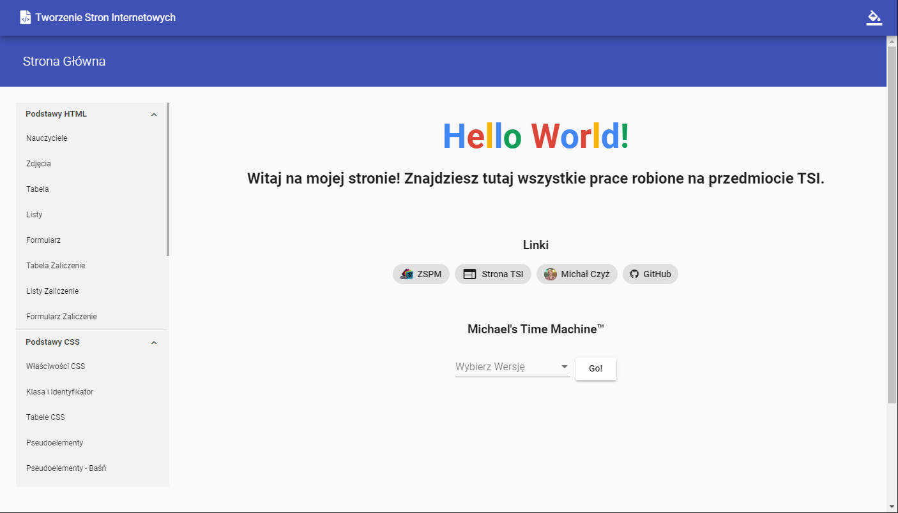
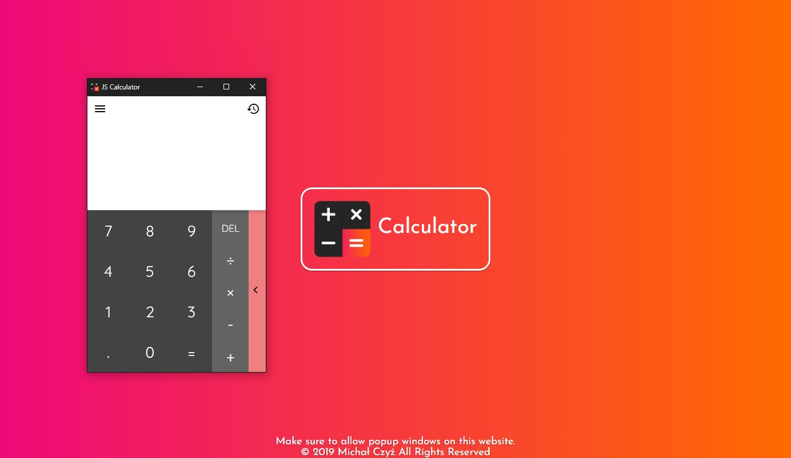
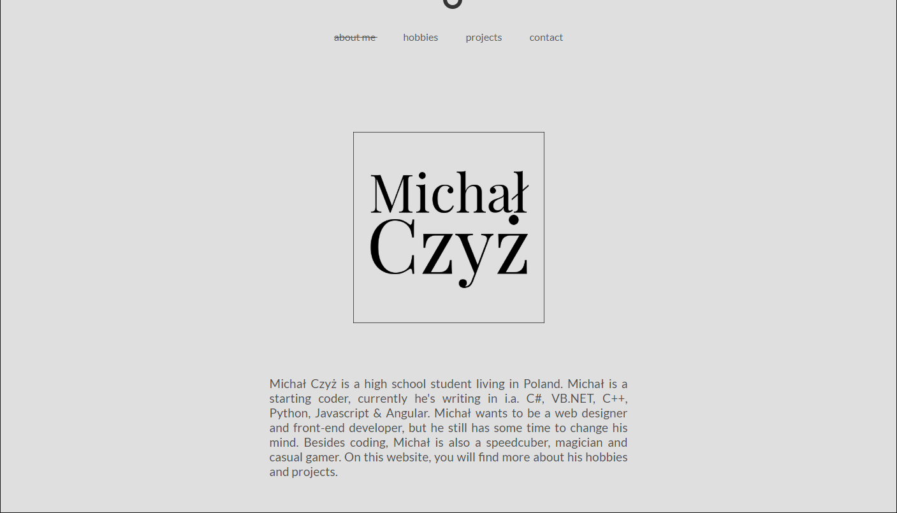
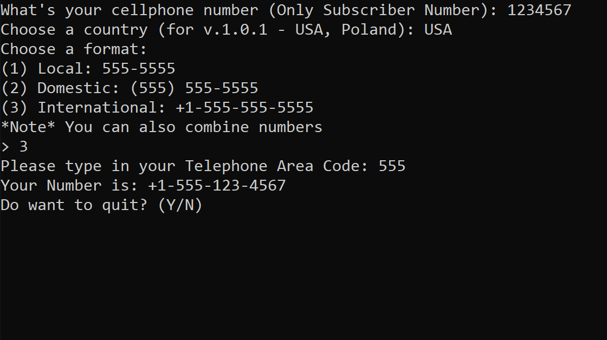

<div id="projects-wrapper" fxLayoutAlign="center center" fxLayout="column" fxLayoutGap="40px">
  <div id="projects-row" class="first" fxLayoutAlign="center center" fxLayoutGap="40px">
    <div id="firstfirst" class="project" data-aos="fade-up" data-aos-duration="700" (click)="goto('https://tsi.mczyz.ml')">
      
      <div id="project-desc" fxLayoutAlign="center center">
        <span id="project-desc-text">Project TSI</span>
      </div>
    </div>
    <div class="project" data-aos="fade-up" data-aos-delay="300" data-aos-duration="700" data-aos-anchor="#firstfirst"
      (click)="goto('https://js-calc.cf')">
      
      <div id="project-desc" fxLayoutAlign="center center">
        <span id="project-desc-text">JS-CALC</span>
      </div>
    </div>
  </div>
  <div id="projects-row" fxLayoutAlign="center center" fxLayoutGap="40px">
    <div id="firstsecond" class="project" data-aos="fade-up" data-aos-duration="700" (click)="goto('https://michalczyz.ml')">
      
      <div id="project-desc" fxLayoutAlign="center center">
        <span id="project-desc-text">My Portfolio v1.0</span>
      </div>
    </div>
    <div class="project" data-aos="fade-up" data-aos-delay="300" data-aos-duration="700" data-aos-anchor="#firstsecond"
      (click)="goto('https://mczyz.ml/assets/cpp-apps/Telephone_Number_Converter_1.0.1.exe')">
      
      <div id="project-desc" fxLayoutAlign="center center">
        <span id="project-desc-text">Telephone Number Converter</span>
      </div>
    </div>
  </div>
</div>
<app-footer></app-footer>
